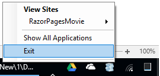

Working with SQL Server LocalDB and ASP.NET Core
By Rick Anderson and Joe Audette
The MovieContext object handles the task of connecting to the database and mapping Movie objects to database records. The database context is registered with the Dependency Injection container in the ConfigureServices method in the Startup.cs file:
public void ConfigureServices(IServiceCollection services)
{
// requires
// using RazorPagesMovie.Models;
// using Microsoft.EntityFrameworkCore;
services.AddDbContext<MovieContext>(options =>
options.UseSqlServer(Configuration.GetConnectionString("MovieContext")));
services.AddMvc();
}
The ASP.NET Core Configuration system reads the ConnectionString. For local development, it gets the connection string from the appsettings.json file:
"ConnectionStrings": {
"MovieContext": "Server=(localdb)\\mssqllocaldb;Database=Movie-1;Trusted_Connection=True;MultipleActiveResultSets=true"
}
When you deploy the app to a test or production server, you can use an environment variable or another approach to set the connection string to a real SQL Server. See Configuration for more information.
SQL Server Express LocalDB
LocalDB is a lightweight version of the SQL Server Express Database Engine that is targeted for program development. LocalDB starts on demand and runs in user mode, so there is no complex configuration. By default, LocalDB database creates "*.mdf" files in the C:/Users/<user> directory.
From the View menu, open SQL Server Object Explorer (SSOX).

Right click on the
Movietable and select View Designer:

Note the key icon next to ID. By default, EF creates a property named ID for the primary key.
Right click on the
Movietable and select View Data:
Seed the database
Create a new class named SeedData in the Models folder. Replace the generated code with the following:
using Microsoft.EntityFrameworkCore;
using Microsoft.Extensions.DependencyInjection;
using System;
using System.Linq;
namespace RazorPagesMovie.Models
{
public static class SeedData
{
public static void Initialize(IServiceProvider serviceProvider)
{
using (var context = new MovieContext(
serviceProvider.GetRequiredService<DbContextOptions<MovieContext>>()))
{
// Look for any movies.
if (context.Movies.Any())
{
return; // DB has been seeded
}
context.Movies.AddRange(
new Movie
{
Title = "When Harry Met Sally",
ReleaseDate = DateTime.Parse("1989-2-12"),
Genre = "Romantic Comedy",
Price = 7.99M
},
new Movie
{
Title = "Ghostbusters",
ReleaseDate = DateTime.Parse("1984-3-13"),
Genre = "Comedy",
Price = 8.99M
},
new Movie
{
Title = "Ghostbusters 2",
ReleaseDate = DateTime.Parse("1986-2-23"),
Genre = "Comedy",
Price = 9.99M
},
new Movie
{
Title = "Rio Bravo",
ReleaseDate = DateTime.Parse("1959-4-15"),
Genre = "Western",
Price = 3.99M
}
);
context.SaveChanges();
}
}
}
}
If there are any movies in the DB, the seed initializer returns and no movies are added.
if (context.Movies.Any())
{
return; // DB has been seeded.
}
Add the seed initializer
Add the seed initializer to the end of the Main method in the Program.cs file:
// Unused usings removed.
using Microsoft.AspNetCore;
using Microsoft.AspNetCore.Hosting;
using Microsoft.Extensions.DependencyInjection;
using Microsoft.Extensions.Logging;
using RazorPagesMovie.Models;
using System;
namespace RazorPagesMovie
{
public class Program
{
public static void Main(string[] args)
{
var host = BuildWebHost(args);
using (var scope = host.Services.CreateScope())
{
var services = scope.ServiceProvider;
try
{
// Requires using RazorPagesMovie.Models;
SeedData.Initialize(services);
}
catch (Exception ex)
{
var logger = services.GetRequiredService<ILogger<Program>>();
logger.LogError(ex, "An error occurred seeding the DB.");
}
}
host.Run();
}
public static IWebHost BuildWebHost(string[] args) =>
WebHost.CreateDefaultBuilder(args)
.UseStartup<Startup>()
.Build();
}
}
Test the app
- Delete all the records in the DB. You can do this with the delete links in the browser or from SSOX
Force the app to initialize (call the methods in the
Startupclass) so the seed method runs. To force initialization, IIS Express must be stopped and restarted. You can do this with any of the following approaches:Right click the IIS Express system tray icon in the notification area and tap Exit or Stop Site:


- If you were running VS in non-debug mode, press F5 to run in debug mode.
- If you were running VS in debug mode, stop the debugger and press F5.
The app shows the seeded data:

The next tutorial will clean up the presentation of the data.